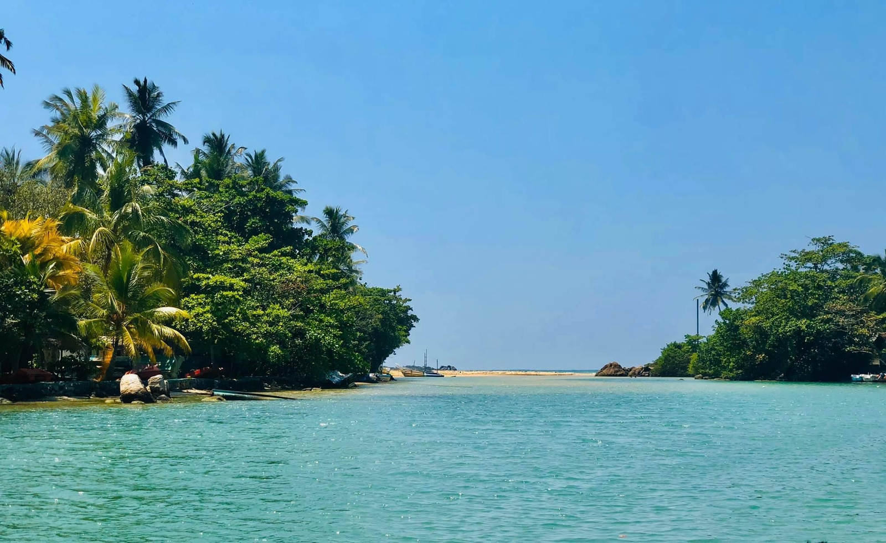
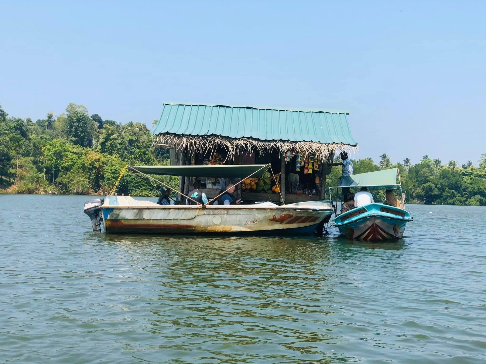
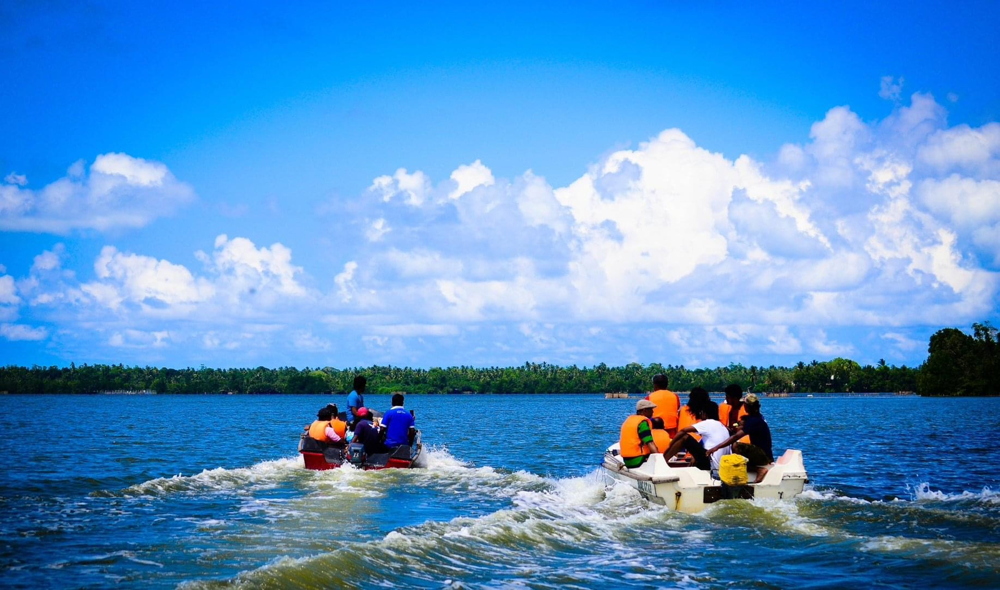
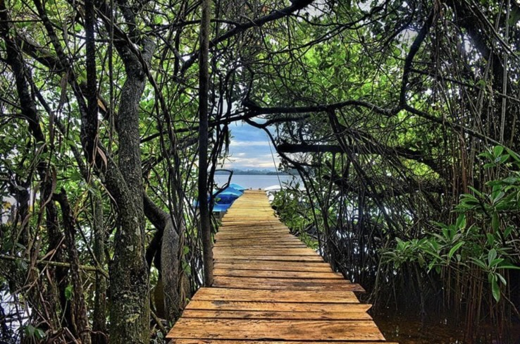

"Life is better on the water"
Our riverside boat safari company offers a magical experience you've never seen before,
because this is the best place in the world for this safari.
We are proud to have maintained the best safety record in Boat Safari Sri Lanka over the years.
Our drivers and ground crew are fully qualified and highly experienced. All have years of experience behind them, some with careers spanning 10+ years.
You can find our packages and details here. We have included the best safaris for you and you can customize them to your liking.
River Side Boat Safari in the Madu ganga with petting baby crocodiles,
watch exotic birds early morning, indulging in a Fish massage and visit a Cinnamon Island. Also as we mentioned in our Packages
we offer to visit Kothduwa Temple, Travel through mangrove forest, visit Sathapaha Duwa
(Smallest island) and visit Nay duwa. As well as we offer Welcome drink, Romantic Lunch in Lake view, Lunch buffet,
Evening tea with snacks and small games like Swan boat ride, Archery, Kayaking Air Rifle Shooting (3 Pellets free)
We could also go on a moonlight safari. We will ensure that it will be a memorable adventure of a lifetime.
-



